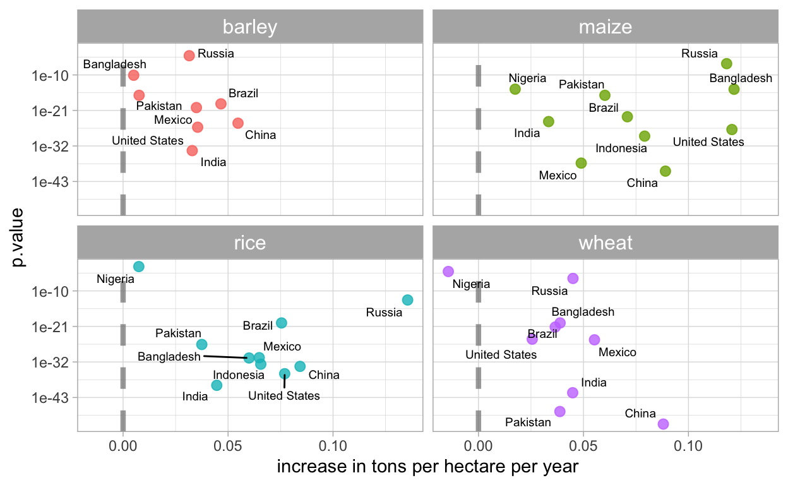

Se presenta las tendencias de rendimiento de los principales cultivos en los diez paises más poblados del mundo.
El rendimiento de los distintos cultivos estan cambiando de manera positiva. Estos cambios generalmente se basan en un arduo trabajo de los fitomejadores. El incremento de los rendimientos es un aspecto importante, este factor determina la productividad de un cultivo y por tanto está enlazada con la disponibilidad de alimentación para la humanidad.
El propósito de este post es estimar los cambios de rendimiento de los cultivos en los 10 países más poblados del mundo.
La base de datos referidas a los rendimientos y otros estan disponibles en TidyTuesday. Este post es una réplica de la publicación de Julia Silge. Tambien puede observar el video que publicó Julia Silge.
Para iniciar el análisis necesitamos leer dos conjuntos de datos que corresponden a rendimiento de los cultivos.
library(tidyverse)
key_crop_yields <- read_csv("https://raw.githubusercontent.com/rfordatascience/tidytuesday/master/data/2020/2020-09-01/key_crop_yields.csv")
land_use <- read_csv("https://raw.githubusercontent.com/rfordatascience/tidytuesday/master/data/2020/2020-09-01/land_use_vs_yield_change_in_cereal_production.csv")
El conjunto de datos land_use solo se usará para encontrar países con mayor población. Para esto es necesario asignar un vector para identificar el ranking de paises con mayor población.
top_countries <- land_use %>%
janitor::clean_names() %>%
filter(!is.na(code), entity != "World") %>%
group_by(entity) %>%
filter(year == max(year)) %>%
ungroup() %>%
slice_max(total_population_gapminder, n = 10) %>%
pull(entity)
top_countries
[1] "China" "India" "United States" "Indonesia"
[5] "Pakistan" "Brazil" "Nigeria" "Bangladesh"
[9] "Russia" "Mexico" Ahora ordenamos los datos de rendimiento de los cultivos para los países y cultivos de interes.
tidy_yields <- key_crop_yields %>%
janitor::clean_names() %>%
pivot_longer(wheat_tonnes_per_hectare:bananas_tonnes_per_hectare,
names_to = "crop", values_to = "yield") %>%
mutate(crop = str_remove(crop, "_tonnes_per_hectare")) %>%
filter(
crop %in% c("wheat", "rice", "maize", "barley"),
entity %in% top_countries,
!is.na(yield)
)
tidy_yields
# A tibble: 2,022 x 5
entity code year crop yield
<chr> <chr> <dbl> <chr> <dbl>
1 Bangladesh BGD 1961 wheat 0.574
2 Bangladesh BGD 1961 rice 1.70
3 Bangladesh BGD 1961 maize 0.799
4 Bangladesh BGD 1961 barley 0.577
5 Bangladesh BGD 1962 wheat 0.675
6 Bangladesh BGD 1962 rice 1.53
7 Bangladesh BGD 1962 maize 0.738
8 Bangladesh BGD 1962 barley 0.544
9 Bangladesh BGD 1963 wheat 0.607
10 Bangladesh BGD 1963 rice 1.77
# … with 2,012 more rows¡Esta estructura de datos es perfecta para graficar el rendimiento del cultivo a lo largo del tiempo!
Tenga en cuenta que no todos los países producen todos los cultivos, pero que el rendimiento general de los cultivos está aumentando.
Ahora ajustemos un modelo lineal a cada combinación de cultivo y país.
library(tidymodels)
tidy_lm <- tidy_yields %>%
nest(yields = c(year, yield)) %>%
mutate(model = map(yields, ~ lm(yield ~ year, data = .x)))
tidy_lm
# A tibble: 37 x 5
entity code crop yields model
<chr> <chr> <chr> <list> <list>
1 Bangladesh BGD wheat <tibble [58 × 2]> <lm>
2 Bangladesh BGD rice <tibble [58 × 2]> <lm>
3 Bangladesh BGD maize <tibble [58 × 2]> <lm>
4 Bangladesh BGD barley <tibble [58 × 2]> <lm>
5 Brazil BRA wheat <tibble [58 × 2]> <lm>
6 Brazil BRA rice <tibble [58 × 2]> <lm>
7 Brazil BRA maize <tibble [58 × 2]> <lm>
8 Brazil BRA barley <tibble [58 × 2]> <lm>
9 China CHN wheat <tibble [58 × 2]> <lm>
10 China CHN rice <tibble [58 × 2]> <lm>
# … with 27 more rowsA continuación, vamos a ordenar con tidy() esos modelos para obtener los coeficientes y ajustar los valores p para múltiples comparaciones.
slopes <- tidy_lm %>%
mutate(coefs = map(model, tidy)) %>%
unnest(coefs) %>%
filter(term == "year") %>%
mutate(p.value = p.adjust(p.value))
slopes
# A tibble: 37 x 10
entity code crop yields model term estimate std.error statistic
<chr> <chr> <chr> <list> <lis> <chr> <dbl> <dbl> <dbl>
1 Bangla… BGD wheat <tibb… <lm> year 0.0389 0.00253 15.4
2 Bangla… BGD rice <tibb… <lm> year 0.0600 0.00231 26.0
3 Bangla… BGD maize <tibb… <lm> year 0.122 0.0107 11.3
4 Bangla… BGD barl… <tibb… <lm> year 0.00505 0.000596 8.47
5 Brazil BRA wheat <tibb… <lm> year 0.0366 0.00222 16.5
6 Brazil BRA rice <tibb… <lm> year 0.0755 0.00490 15.4
7 Brazil BRA maize <tibb… <lm> year 0.0709 0.00395 18.0
8 Brazil BRA barl… <tibb… <lm> year 0.0466 0.00319 14.6
9 China CHN wheat <tibb… <lm> year 0.0880 0.00141 62.6
10 China CHN rice <tibb… <lm> year 0.0843 0.00289 29.2
# … with 27 more rows, and 1 more variable: p.value <dbl>Ahora podemos visualizar los resultados de este modelo, que está estimando cómo están cambiando los rendimientos de los cultivos en todo el mundo.
library(ggrepel)
slopes %>%
ggplot(aes(estimate, p.value, label = entity)) +
geom_vline(
xintercept = 0, lty = 2,
size = 1.5, alpha = 0.7, color = "gray50") +
geom_point(aes(color = crop), alpha = 0.8, size = 2.5, show.legend = FALSE) +
scale_y_log10() +
facet_wrap(~crop) +
geom_text_repel(size = 2.5) +
theme_light() +
theme(strip.text = element_text(size = 12)) +
labs(x = "increase in tons per hectare per year")

En el eje-x está la pendiente de estos modelos. Tenga en cuenta que la mayoría de los países están en el lado positivo, con rendimientos de cultivos en aumento. Cuanto más a la derecha esté un país, mayor será el aumento del rendimiento de los cultivos durante este período de tiempo. Los rendimientos de maíz son los que más han aumentado.
En el eje-y está el valor p, una medida de cuán sorprendente es el efecto que vemos bajo el supuesto de que no hay relación (sin cambios con el tiempo). Los países más bajos en las parcelas tienen valores p más pequeños; estamos más seguros de que se trata de relaciones reales.
Podemos ampliar esto para comprobar qué tan bien estos modelos se ajustan a los datos con glance(). ¡Este enfoque para usar modelos estadísticos para estimar cambios en muchos subgrupos a la vez me ha sido muy útil en muchas situaciones!